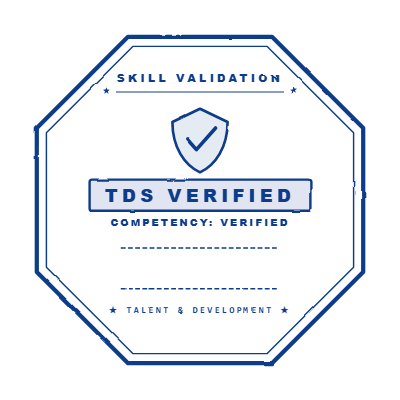
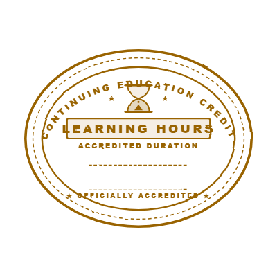
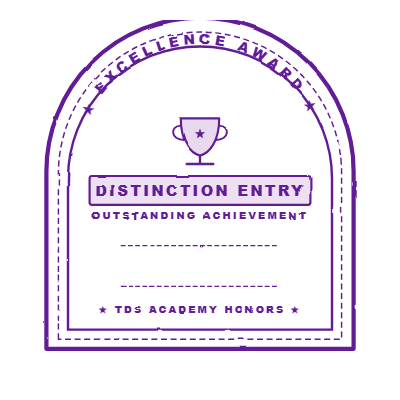
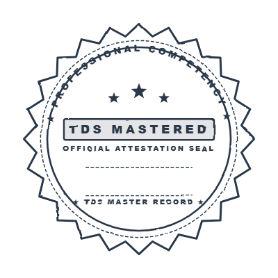

Apresiasi atas dedikasi dan keaktifan Anda yang telah menyelesaikan 3 program pelatihan dengan akumulasi 24 jam belajar untuk penguatan kapabilitas profesional.
Jam pelatihan yang telah diselesaikan akan tercatat otomatis. Progress bar di Learning Passport akan terisi seiring penyelesaian program pelatihan.



